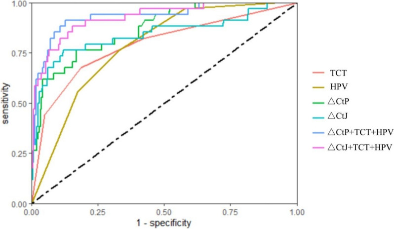
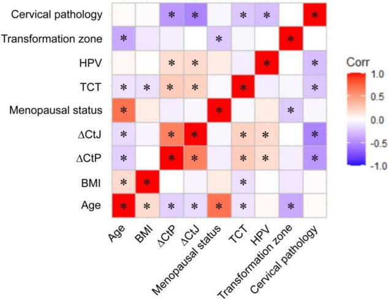
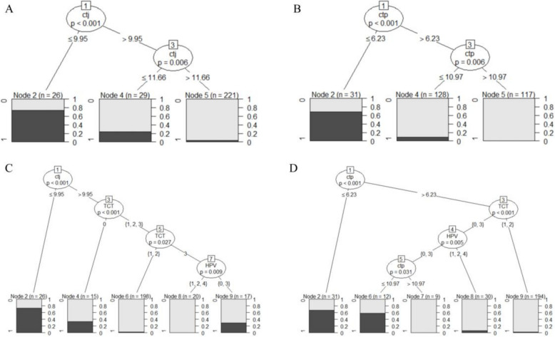

1Background & Objective
- Challenge: catching HSIL early prevents invasive cancer; hr-HPV testing is sensitive but low-specificity.
- TCT limits: low sensitivity, subjective (esp. ASCUS); NGS HPV-integration is accurate but costly.
- Objective: evaluate JAM3 (ΔCtJ) & PAX1 (ΔCtP) methylation for HSIL diagnosis vs TCT/HPV.
2Study Design & Cohort
276
hr-HPV+ enrolled
242
non-HSIL
34
HSIL (CIN2–3)
HPV+
TCT cytology+
JAM3/PAX1 methylation
- Setting: Third Xiangya Hospital, Aug–Nov 2022; ethics approved (No. 23137).
- Methods: exfoliated cervical cells → HPV + TCT + qPCR methylation (GAPDH control).
- Analysis: logistic regression; conditional inference tree; ROC/AUC.
- Pathology: colposcopy-directed biopsy; chronic cervicitis/CIN1 = non-HSIL.
- Risk factors (multivariate): ΔCtJ, ΔCtP, ASC-US, HPV16.
- Cutoffs (CART): diagnose HSIL ΔCtJ ≤ 9.95 / ΔCtP ≤ 6.23; rule out ΔCtJ > 11.66 / ΔCtP > 10.97.
- Inclusion/exclusion: no vaginal meds 3 mo / sex 2 d; no recent cervical therapy.
3ROC Curves & Correlation

Fig. 3 ROC curves — ΔCtP+TCT+HPV highest AUC 0.932; TCT/HPV alone lowest.

Fig. 1 Correlation heatmap — pathology vs ΔCtJ r=−0.532, ΔCtP r=−0.447 (P<0.05).
- Combination wins: ΔCtP+TCT+HPV AUC 0.932 > ΔCtJ+TCT+HPV 0.926 > single markers (0.867/0.841) > TCT 0.791, HPV 0.784.
- Methylation tracks severity: lower ΔCt (higher methylation) correlates with HSIL.
4Decision Rules — Directly Actionable
ΔCtJ ≤ 9.95
73.1% HSIL — high risk
ΔCtJ > 11.66
96.4% non-HSIL
ΔCtP ≤ 6.23
67.7% HSIL — high risk
ΔCtP > 10.97
99.1% non-HSIL
ΔCtP > 6.23 + TCT LSIL/ASC-US
97.9% non-HSIL
ΔCtJ > 9.95 + TCT NILM + HPV 18/52/other
100% non-HSIL
- Tree model: cutoffs from CART; as ΔCt rises, HSIL probability falls sharply.
- Rule-out power: ΔCtP > 10.97 or ΔCtJ > 11.66 safely rules out HSIL in clinic.
- Combined tree (D): ΔCtP+TCT+HPV stratified non-HSIL up to 97.9–100% — best model.
5Six-Model Comparison — HSIL
| Model | Se % | Sp % | PPV % | NPV % | AUC |
|---|---|---|---|---|---|
| ΔCtP+TCT+HPV | 91.2 | 87.2 | 50.0 | 98.6 | 0.932 |
| ΔCtJ+TCT+HPV | 88.2 | 84.7 | 44.8 | 98.1 | 0.926 |
| ΔCtP | 76.5 | 83.1 | 38.8 | 96.2 | 0.867 |
| ΔCtJ | 76.5 | 88.0 | 47.3 | 96.4 | 0.841 |
| TCT | 67.6 | 81.4 | 33.8 | 94.7 | 0.791 |
| HPV | 76.5 | 66.9 | 24.5 | 95.3 | 0.784 |
Combining methylation with routine tests beats any single test; TCT/HPV alone rank lowest.
6Conditional Inference Tree

Fig. 2 Tree-based rules (A–D) using ΔCtJ / ΔCtP with TCT & HPV — interpretable, easy to implement.
- Interpretable: recursive binary splitting gives direct clinical decision rules.
- Tree C: adding TCT/HPV to ΔCtJ did not beat ΔCtJ alone.
- Tree D: adding TCT/HPV improved ΔCtP stratification (AUC 0.932).
A: ΔCtJ · B: ΔCtP · C: ΔCtJ+TCT+HPV · D: ΔCtP+TCT+HPV